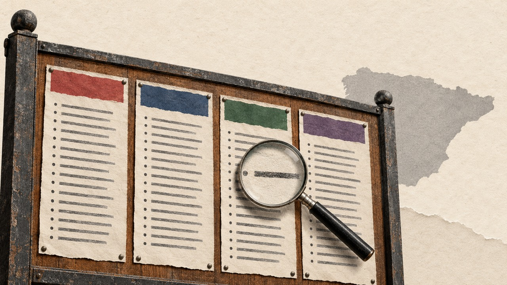

Elecciones del 29N · Candidatos
Listas del 29N: 4.025 candidatos al Congreso, y quién tiene opciones de salir
Busca por nombre, provincia o partido entre los 6.259 nombres de las listas al Congreso y al Senado del 28 de octubre de 2026, con la probabilidad de salir elegido de cada puesto según la media de encuestas.
Por Nacho G. del Álamo · Actualizado el

Cargando las listas…
| Candidato | Puesto | Candidatura | Provincia | Opciones de salir |
|---|
Al 29N se presentan 555 candidaturas al Congreso en las 52 provincias, con 4.025 candidatos titulares y 1.403 suplentes. Concurren en todas o casi todas PP, PSOE, Vox. La provincia con más listas es Araba, con 15.
Con la media de las encuestas, 205 candidatos tienen el escaño en el aire (salen elegidos en entre el 10 % y el 90 % de las simulaciones). Entre los más cerca del cara o cruz: María Álvarez Collada (PSOE, Asturias, 50 %); Sara Daroca Núñez (Vox, Santa Cruz de Tenerife, 50 %); Matías Recio Juárez (Vox, Palencia, 50 %); Carlos Arturo Bernal Bergua (PP, Málaga, 49 %); Pilar Esperanza González Alemán Pareja Obregón (Vox, Sevilla, 51 %).
205 de los titulares son diputados en la legislatura que acaba (XV), según los datos abiertos del Congreso.
Fechas clave de las listas del 29N
- 26 de octubreFin del plazo para presentar candidaturas
- 28 de octubreEl BOE publica las candidaturas presentadas
- 2 de noviembreLas juntas electorales provinciales proclaman las candidaturas
- 3 de noviembreEl BOE publica las candidaturas proclamadas
- 13 de noviembreEmpieza la campaña electoral
- 27 de noviembreTermina la campaña
- 29 de noviembreElecciones generales
Listas del 29N por provincia
Cada provincia tiene su página con todas las candidaturas al Congreso y al Senado, puesto a puesto, con las opciones de cada candidato.
- A Coruña 10 listas · 8 escaños
- Albacete 9 listas · 4 escaños
- Alicante 10 listas · 12 escaños
- Almería 13 listas · 6 escaños
- Araba 15 listas · 4 escaños
- Asturias 11 listas · 7 escaños
- Ávila 10 listas · 3 escaños
- Badajoz 10 listas · 5 escaños
- Barcelona 13 listas · 32 escaños
- Bizkaia 12 listas · 8 escaños
- Burgos 8 listas · 4 escaños
- Cáceres 10 listas · 4 escaños
- Cádiz 11 listas · 8 escaños
- Cantabria 7 listas · 5 escaños
- Castellón 10 listas · 5 escaños
- Ceuta 6 listas · 1 escaños
- Ciudad Real 6 listas · 5 escaños
- Córdoba 12 listas · 6 escaños
- Cuenca 10 listas · 3 escaños
- Gipuzkoa 11 listas · 6 escaños
- Girona 10 listas · 6 escaños
- Granada 11 listas · 7 escaños
- Guadalajara 10 listas · 3 escaños
- Huelva 10 listas · 5 escaños
- Huesca 11 listas · 3 escaños
- Illes Balears 8 listas · 8 escaños
- Jaén 11 listas · 5 escaños
- La Rioja 10 listas · 4 escaños
- Las Palmas 14 listas · 8 escaños
- León 13 listas · 4 escaños
- Lleida 10 listas · 4 escaños
- Lugo 8 listas · 4 escaños
- Madrid 14 listas · 38 escaños
- Málaga 12 listas · 11 escaños
- Melilla 6 listas · 1 escaños
- Murcia 12 listas · 10 escaños
- Navarra 12 listas · 5 escaños
- Ourense 11 listas · 4 escaños
- Palencia 11 listas · 3 escaños
- Pontevedra 11 listas · 7 escaños
- Salamanca 10 listas · 4 escaños
- Santa Cruz de Tenerife 13 listas · 7 escaños
- Segovia 10 listas · 3 escaños
- Sevilla 12 listas · 12 escaños
- Soria 11 listas · 2 escaños
- Tarragona 13 listas · 6 escaños
- Teruel 10 listas · 3 escaños
- Toledo 9 listas · 6 escaños
- Valencia 14 listas · 16 escaños
- Valladolid 13 listas · 5 escaños
- Zamora 9 listas · 3 escaños
- Zaragoza 12 listas · 7 escaños
Preguntas frecuentes sobre las listas del 29N
¿Cuándo se publican las listas electorales del 29N?
Las candidaturas presentadas, en el BOE del 28 de octubre de 2026. Las proclamadas, tras revisarlas cada junta electoral provincial, en el BOE del 3 de noviembre. Entre una y otra puede caer alguna lista o algún nombre.
¿Dónde puedo consultar los candidatos de mi provincia?
En esta página: elige tu provincia en el buscador o entra en su página, donde están todas las listas al Congreso y al Senado, puesto a puesto.
¿Qué significa la probabilidad de salir elegido?
Es el porcentaje de simulaciones del modelo de Mapa Electoral (media de encuestas repartida por provincia. 2.000 simulaciones) en que ese puesto de la lista consigue escaño. No es una encuesta ni un resultado: cambia con las encuestas.
¿Cómo se reparten los escaños del Congreso?
Cada provincia elige un número fijo de diputados (Madrid 38 y Barcelona 32; Soria, 2; Ceuta y Melilla, 1). Se reparten con la ley D'Hondt entre las listas que superan el 3 % de los votos válidos de la provincia, y salen los primeros de cada lista por orden.
¿Cómo se vota al Senado?
Con listas abiertas: en cada provincia peninsular se eligen cuatro senadores y el elector puede marcar hasta tres nombres de cualquier candidatura. En las islas, cada isla elige los suyos.
Método y fuentes
- Listas
- BOE del 28 de octubre de 2026, candidaturas presentadas. Se leen del XML oficial (código) y se comprueba que estén las 52 juntas provinciales y que cada lista tenga sus puestos completos.
- Opciones de salir elegido
- Modelo de Mapa Electoral con la media de encuestas del 26 de octubre de 2026 (2,000 simulaciones). La misma simulación de Las listas del 29N, puesto a puesto. Solo para el Congreso y para las listas que mide el modelo.
- Diputados de la legislatura que acaba
- Datos abiertos del Congreso, descargados el 27 de octubre de 2026: altas y bajas de la XV legislatura, comparadas por nombre en la misma provincia. Un nombre escrito de otra forma puede quedarse sin marcar.
- Límites
- Entre las listas presentadas (28 de octubre) y las proclamadas (3 de noviembre) las juntas pueden excluir candidaturas o nombres. Los colores agrupan a cada partido con sus marcas territoriales (PSC con PSOE, Compromís con Frente Amplio).
- Autoría
- Nacho G. del Álamo
Descargar: todas las listas en CSV (una fila por candidato, con suplentes) · JSON · resumen en imagen